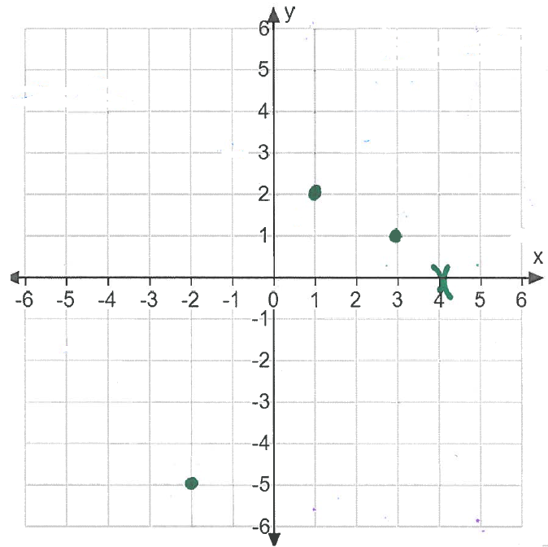
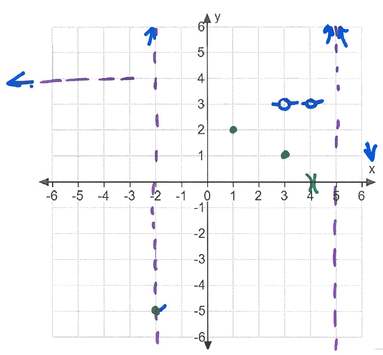
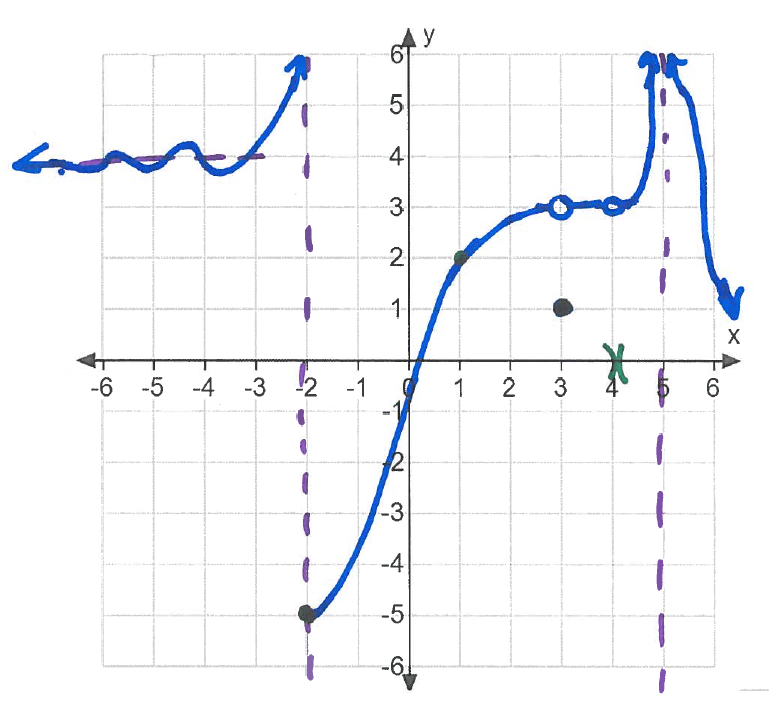

\begin{align*} \lim _{x \to -2^-} f(x) &= \infty & f(-2) &= -5 & f(1) &= 2 \\ \lim _{x \to \infty } f(x) &= -\infty & \lim _{x \to -\infty } f(x) &= 4 & \lim _{x \to 5} f(x) &= \infty \\ \lim _{x \to 3} f(x) &= 3 & f(3) &= 1 &\\ \lim _{x \to -2^+}f(x)&=-5 & f(4) &\text { is undefined}& \lim _{x \to 4}f(x)&=3\\ \end{align*}
There are many correct solutions to this problem. One possible solution can be
constructed as follows: First we draw the given points. We’ll also draw open
brackets on the x-axis at \(x=4\) since \(f(x)\) is not defined at \(x=4\) (This is seen in green.)

Then we draw the vertical and horizontal asymptotes (in purple) and arrows indicating how the graph approaches the asymptote (in blue). We also draw end-behavior as \(x\) approaches \(\infty \) and \(-\infty \) (in blue). We can also draw tails where we know limits at particular x-values. Such as \( \lim _{x \to -2^+}f(x)=-5\).

Finally we connect our graph together (seen in blue)
